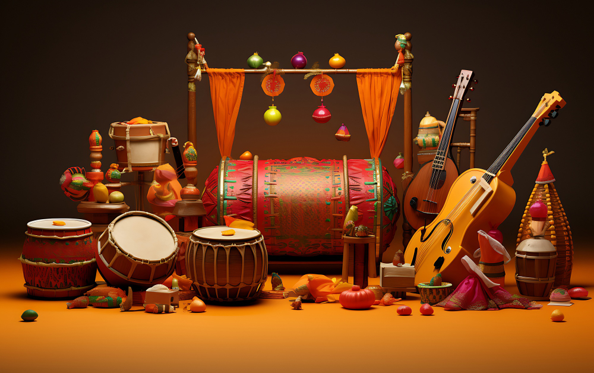

Indian musical instruments are important because they are a key part of India's musical heritage, and they help to preserve and share the country's culture.
Learning about Indian musical instruments is a great way to learn more about Indian culture and classical and folk traditions.
Musical instruments are the tangible and material representation of music which is an auditory art. A study of these helps in tracing the evolution of music and also explains many aspects of the material culture of the group of people to which these instruments belong.
Know more